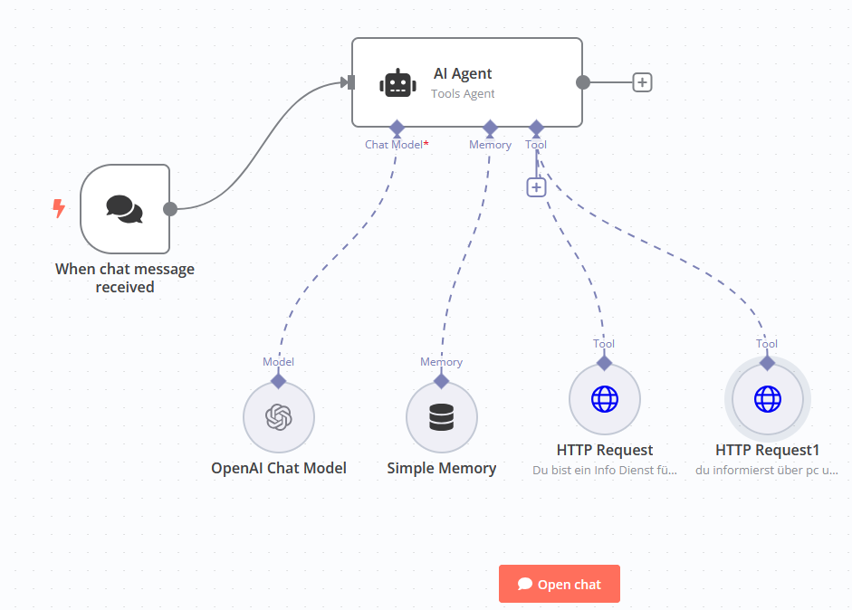

Warum ein Chatbot?
Ein Chatbot kann Ihren Kundenservice verbessern, Anfragen rund um die Uhr beantworten und Prozesse automatisieren. Testen Sie unseren Chatbot direkt hier auf der Seite, rechts unten der rote Meaasege Button!
Umgesetzt wird das mit n8n, hier sehen sie ein Bild wie dieser worklfow im Hintergrund aussieht!
